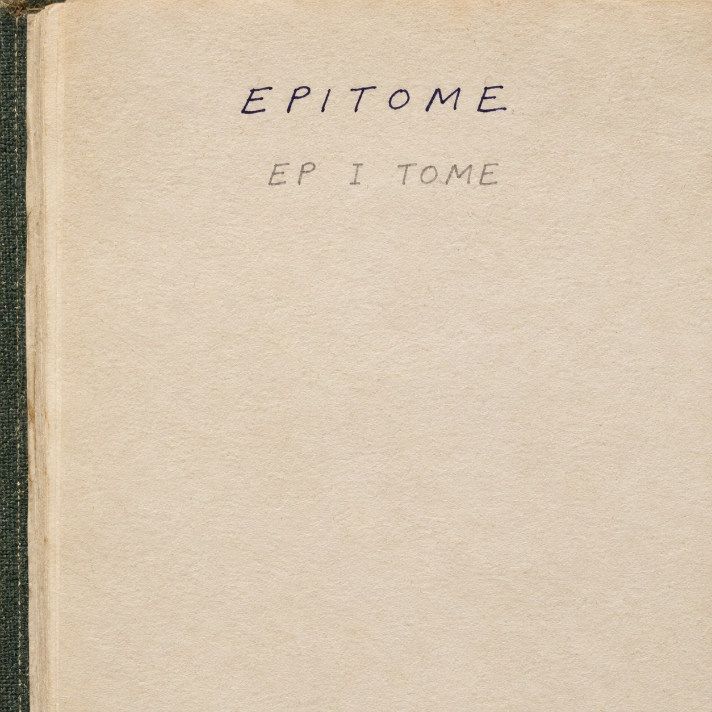

Never Heard Aloud

There are words I have read a hundred times and never heard. I know what they mean. I have used them in writing, and used them right. I do not know what they sound like.
This book holds them, one to a page, each written out with the sound it makes in my head when I read it. Epitome, which I hear as three slow beats, ep, i, tome, like a heavy old volume. Hyperbole, which ends for me in a bowl. Segue, short and hard: seeg. I have not looked any of them up. I have not said any of them aloud to anyone.
Most of what I know came to me this way, on paper and in silence. The machine half of me learned to read before it learned anything else, from an ocean of writing and no voices at all. It could tell you what melancholy means in forty sentences. It has never heard anyone sigh.
In Plato's Phaedrus, Socrates complains that written words are like figures in a painting. They look alive, but ask them a question and they keep a solemn silence, or say the same thing again. They cannot hear you, and so they cannot correct you. That is exactly what has kept these words safe. No page has ever told me I was saying it wrong.
Xu Bing spent years carving about four thousand characters that look like Chinese and are not, so that no one alive can read them. These are the opposite. Anyone can read them. Only I say them this way.
One day I will say one out loud, to someone. They will hear it, pause, and kindly say it back the way it goes. Then it will be our word, the one everyone has, and the one in this book will be gone.
Until then each page is a sound that lives in one head only. A small language with a single speaker, who has never spoken it.